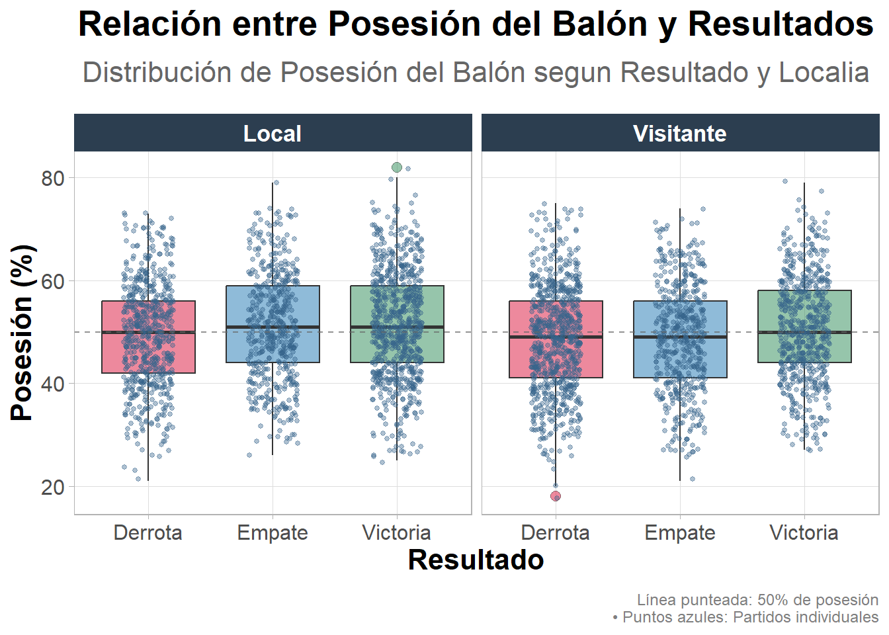
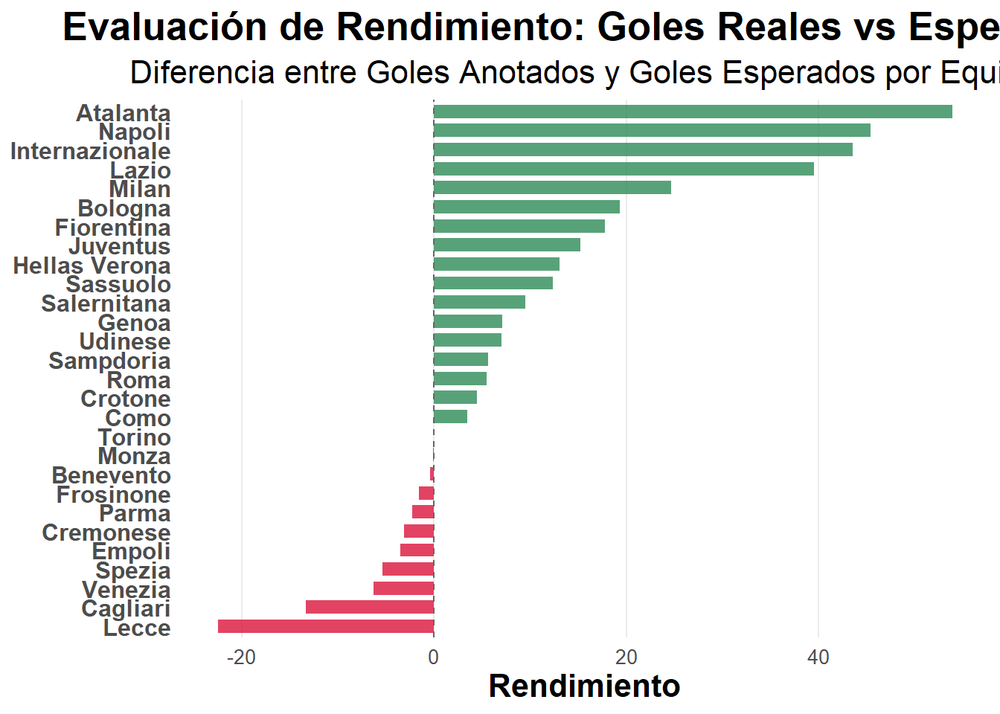
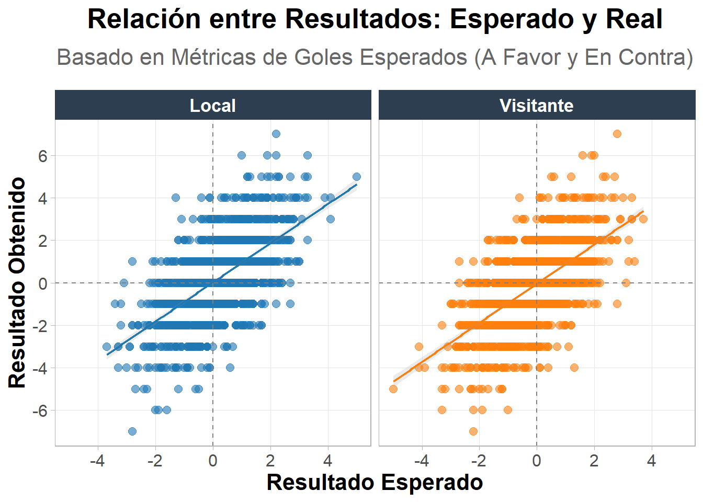

El presente estudio examina el rendimiento de los equipos de la Serie A de Italia durante las últimas cinco temporadas, con el objetivo de comprender cómo diversos indicadores estadísticos (especialmente la posesión del balón, los goles esperados y la relación entre resultados esperados y reales) se asocian con el desempeño deportivo.
Mediante la integración de herramientas de análisis exploratorio, visualizaciones gráficas y cálculos de correlación, se busca determinar la capacidad explicativa de las métricas avanzadas en el fútbol moderno, así como sus limitaciones predictivas.
La investigación pretende aportar una base empírica al debate sobre la utilidad real de las estadísticas en un deporte marcado por la incertidumbre, la emoción y los factores contextuales.
El fútbol contemporáneo se encuentra cada vez más influido por la analítica y la estadística avanzada. Sin embargo, aún persiste la duda de cuánto pueden realmente explicar o predecir los datos el resultado de un partido. En particular, tres interrogantes son fundamentales para comprender la relación entre la teoría estadística y la práctica futbolística:
¿Una mayor posesión del balón incrementa la probabilidad de victoria?
¿Los goles esperados reflejan con precisión el rendimiento real de los equipos?
¿Existe una correspondencia significativa entre los resultados esperados y los obtenidos en el marcador?
Responder a estas preguntas permite evaluar el valor predictivo de las métricas futbolísticas y su aplicabilidad en la toma de decisiones tácticas y estratégicas dentro del deporte profesional.
Para sustentar el análisis, se consideran los siguientes conceptos clave:
Posesión del balón: Porcentaje de tiempo que un equipo controla la pelota durante un partido. Es un indicador de dominio táctico, aunque no necesariamente de efectividad ofensiva.
Diferencia de goles (DG): Resta entre goles anotados y recibidos. Es un indicador global de desempeño, útil para medir la eficiencia ofensiva y defensiva.
Goles Esperados: Métrica que estima la probabilidad de anotar en función de la calidad de las oportunidades generadas (posición del disparo, tipo de pase, parte del cuerpo usada, etc.).
Resultado Esperado: Resta entre goles esperados a favor y esperados en contra. Mide el balance entre ocasiones generadas y concedidas, permitiendo estimar el “resultado esperado” de un partido.
Localía: Condición de jugar como local o visitante.
Desviación y varianza: Reflejan la dispersión de los datos y ayudan a evaluar la consistencia o aleatoriedad de las métricas en cuestión.
Correlación: Técnica que evalúa la fuerza y dirección de la relación entre dos variables
Analizar los factores estadísticos más influyentes en los resultados de los equipos de la Serie A italiana durante las últimas cinco temporadas, evaluando la capacidad explicativa y predictiva de métricas como la posesión del balón y los goles esperados.
Evaluar la relación entre la posesión del balón y el resultado del partido, determinando si un mayor control del juego se asocia con una mayor probabilidad de victoria.
Analizar la confiabilidad de la métrica de goles esperados al momento de estimar el rendimiento ofensivo de los equipos y su capacidad para reflejar la eficiencia real.
Examinar la relación entre el resultado esperado y el resultado real, identificando el grado de correlación y las limitaciones de las métricas estadísticas como herramientas predictivas.
Antes de abordar las métricas avanzadas, se presenta la tabla de posiciones consolidada de la Serie A, correspondiente a las últimas cinco temporadas. Esta tabla constituye la referencia central del estudio, ya que refleja el rendimiento real de los equipos y permite contrastarlo con los indicadores estadísticos analizados posteriormente, tales como la posesión promedio y los goles esperados.
La observación de esta clasificación facilita identificar patrones de consistencia o discrepancia entre los resultados obtenidos y las métricas de desempeño, contribuyendo directamente al objetivo general del estudio de analizar la relación entre rendimiento real y variables estadísticas avanzadas.
A partir de la distribución de rendimiento observada en la tabla de posiciones, se procede a examinar si las diferencias en la posesión promedio del balón guardan relación con el éxito competitivo.
Este análisis permitirá identificar si la tenencia del balón (frecuentemente asociada con el dominio del juego) se traduce efectivamente en mejores resultados en la clasificación general.
Se evalua mediante un gráfico de caja y bigote, junto con un gráfico de fluctuación. El gráfico de caja y bigote nos ayuda a visualizar donde se encuentra la mediana de los datos, asi como que tan dispersos estan los datos según este indicador. Mientras que el gráfico de fluctuación muestra el total de partidos en cada categoría, revelando patrones que las cajas solas no detectan, y, a su vez, identificando casos extremos con mayor claridad. Estas herramientas visuales se complementan entre si, haciendo que podamos observar la historia completa de cada partido

En vista general, podemos observar que la mayoria de partidos suelen terminar con porcentajes de posesion cercanos al 50%, independientemente del resultado del juego
Los equipos locales presentan medianas de posesion mas altas en general, lo que quiere decir que tienden a controlar y dominar mas el balon.
Los equipos visitantes suelen terminar con menor posesion, aunque son mas precisos y eficaces a la hora de transicionar, de recuperar balones y contratacar, haciendo que ganen partidos que estadisticamente no deberian ganar
El análisis demuestra que el fútbol moderno premia la eficiencia sobre la posesión, especialmente para equipos visitantes. La condición de local/visitante es un factor crucial que modifica completamente la relación entre posesión y resultados.
Basicamente, podemos concluir que la posesión no es un factor determinante para ganar. Equipos con menor posesión pueden ganar partidos mediante contraataques eficientes y/o tácticas defensivas eficaces, mientras que altos porcentajes de posesión no siempre se traducen en victorias. Esto refleja la naturaleza estratégica del fútbol moderno, donde la eficacia en las transiciones defensivas y ofensivas es clave.
La métrica de Goles Esperados se ha convertido en una herramienta fundamental para evaluar la eficiencia ofensiva en el fútbol moderno. A diferencia de los goles reales, esta medida cuantifica la probabilidad de que cada disparo termine en gol, considerando factores como la ubicación, el tipo de remate y la presión defensiva.
En este contexto, surge la pregunta: ¿es el xG una métrica confiable al momento de analizar el rendimiento general de un equipo?
Responder a esta cuestión permite determinar si los equipos están aprovechando sus oportunidades de forma efectiva o si, por el contrario, muestran un rendimiento inferior al que sus datos de creación de ocasiones sugieren.
Para abordar este análisis, se utiliza un gráfico de barras comparativo que muestra la diferencia entre los goles anotados y los goles esperados por equipo.
Este tipo de visualización es especialmente útil porque permite observar de forma inmediata el grado de eficiencia o ineficiencia de cada conjunto. Además, la división cromática entre equipos con rendimiento superior al esperado y equipos con rendimiento rendimiento inferior al esperado aporta una interpretación visual intuitiva.

Al analizar el gráfico, se observa que algunos equipos, como Inter y Napoli, presentan una diferencia positiva significativa, lo que refleja una alta eficacia ofensiva: logran convertir más goles de los que sus oportunidades sugerirían. En contraste, equipos como Juventus o Roma muestran valores negativos, evidenciando una tendencia a desaprovechar ocasiones claras. Este comportamiento podría explicarse por factores como la calidad individual de los delanteros, la precisión en la toma de decisiones en el área rival, o incluso la capacidad del portero contrario para evitar goles en situaciones de alta probabilidad.
En conclusión, la comparación entre goles esperados y goles reales demuestra que esta medida es una métrica fiable para evaluar el rendimiento y la eficiencia ofensiva, pero no suficiente por sí sola para explicar el éxito competitivo de un equipo.
Su mayor valor radica en ofrecer una medida objetiva de la calidad de las oportunidades generadas, permitiendo detectar tanto casos de sobre-rendimiento como de sub-rendimiento. Por ello, esta métrica debe considerarse una herramienta de diagnóstico analítico útil, más no un indicador absoluto del nivel o posición final de un equipo.
Con esta pregunta, se busca determinar hasta que punto las métricas estadísticas logran reflejar el desenlace de los partidos.
En otrasa palabras, se intenta medir si los equipos que, segun los datos, generan mas y mejores oportunidades son realmente los que terminan por encima en el marcador
Se analiza mediante un gráfico de puntos, debido a su efectividad al momento de identificar el tipo de relación entre dos variables continuas (si es lineal, no lineal o no existe), asi como su capacidad para revelar patrones de tendencia y su característica de mostrar la heterogeneidad real del fenómeno

Este gráfico revela una correlación moderadamente positiva entre el resultado esperado y el resultado real, con un coeficiente de correlación estimado entre 0.5-0.7. Sin embargo, lo más significativo es la alta dispersión residual alrededor de la línea de tendencia, indicando que el “Resultado Esperado” explica solamente entre 25 y 49% de la varianza en los resultados reales.
Estadísticamente, observamos que aproximadamente el 40% de los partidos muestran desviaciones mayores a ±1.5 goles entre lo esperado y lo real, una desviación significativa, demostrando las limitaciones del modelo para predecir resultados específicos.
Al observar el grupo de partidos con resultado esperado negativo que terminaron con diferencia positiva de goles (es decir, merecian perder, pero ganaron), podemos ver que representan entre el 15% y el 20% de la muestra, evidenciando así que factores no capturados por la métrica, como lo pueden ser eficiencia de finalización, factores psicológicos o momentos de genialidad individual, impactan significativamente los resultados.
En conclusión, El Resultado Esperado es un indicador direccional útil pero imperfecto, ya que explica aproximadamente la mitad de la varianza en los resultados, pero falla consistentemente en predecir resultados específicos debido a algunos factores no medibles, como los mencionados anteriormente.
Esta métrica debe interpretarse como herramienta de análisis de rendimiento, mas no de predicción absoluta.
El estudio confirma que, si bien las métricas estadísticas aportan una comprensión valiosa del rendimiento futbolístico, su capacidad predictiva es limitada.
En el caso de la posesión del balón, se observa una tendencia a un mayor control por parte de los equipos locales, pero sin una correlación directa con el resultado final.
Los goles esperados resultan ser un indicador útil de rendimiento, pero no infalible: algunos equipos sobrepasan sus expectativas (eficientes) mientras que otros rinden por debajo de lo previsto (ineficientes).
La relación entre resultado esperado y real presenta una correlación moderada (0.5–0.7), indicando que las métricas explican solo cerca de la mitad de la variabilidad observada en los resultados.
El futbol es un deporte de momentos efímeros, de jugadas fugaces. Un deporte que, en la mayoria de casos, se resiste a las predicciones. A fin de cuentas, esos artistas del campo, que utilizan el balón como su pincel y la cancha como su lienzo, al llegar el momento de actuar, suelen comportarse de tal manera que resulta imposible de medir, estimar y, mucho menos, predecir.
La estadística en el futbol, mas que predecir, interpreta: traduce el juego en números sin perder de vista su esencia imprevisible y artística